Education Access
Learning activities and educational support designed to help girls continue developing their knowledge.
A community-centered initiative creating space for girls and young women to learn, build confidence, and stay connected to opportunity.
Every girl deserves a place to keep learning, growing, and imagining what comes next.
Girls for Knowledge brings learners and supporters together around education, skills, and community. Our work is built on the belief that access to knowledge strengthens individuals, families, and communities.
Read our storyLearning activities and educational support designed to help girls continue developing their knowledge.
Opportunities to strengthen communication, confidence, leadership, and practical life skills.
A supportive network connecting learners, educators, volunteers, and community partners.
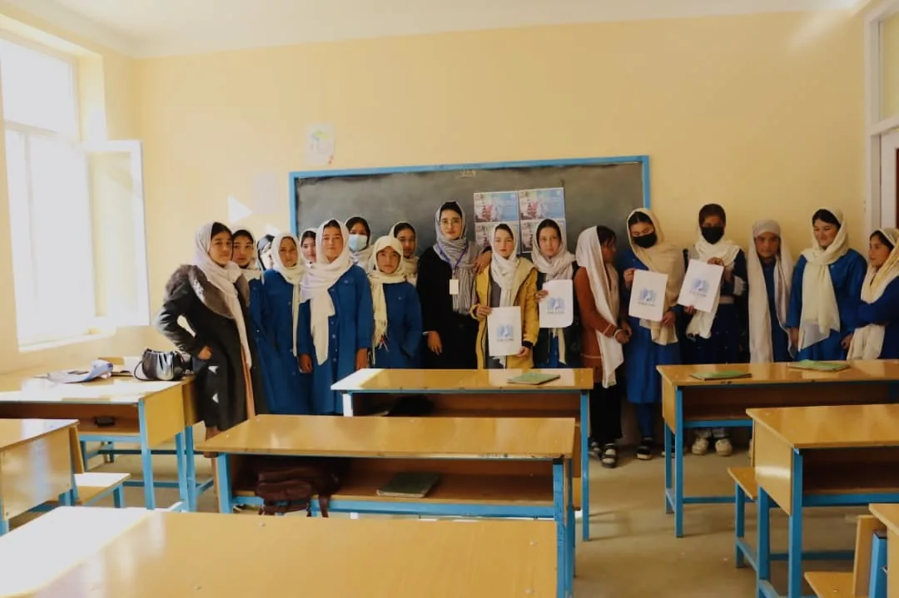
We aim to create welcoming learning spaces where girls can participate, ask questions, develop skills, and feel connected to people who believe in their potential.
Get involved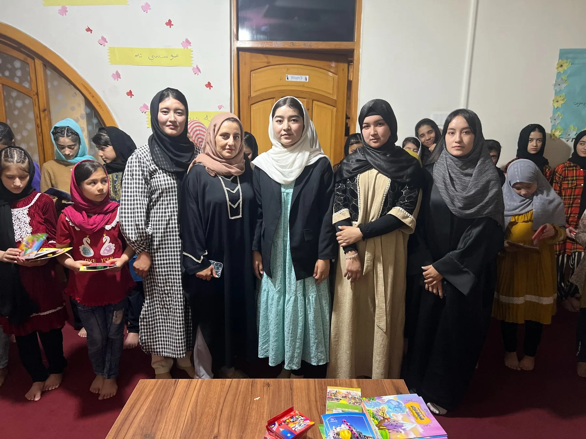
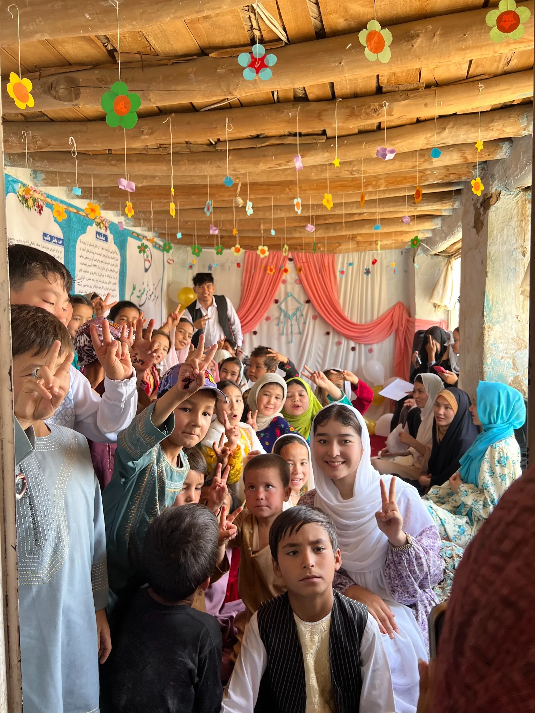
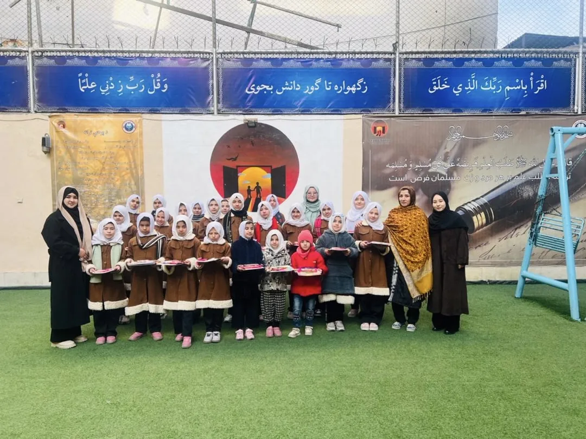
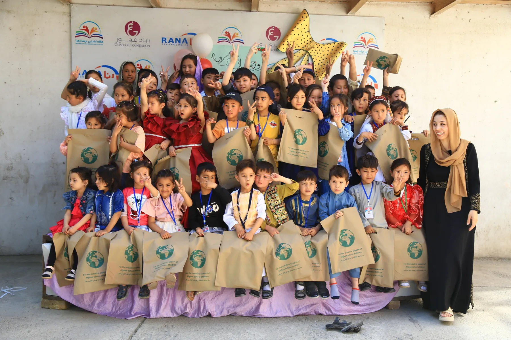
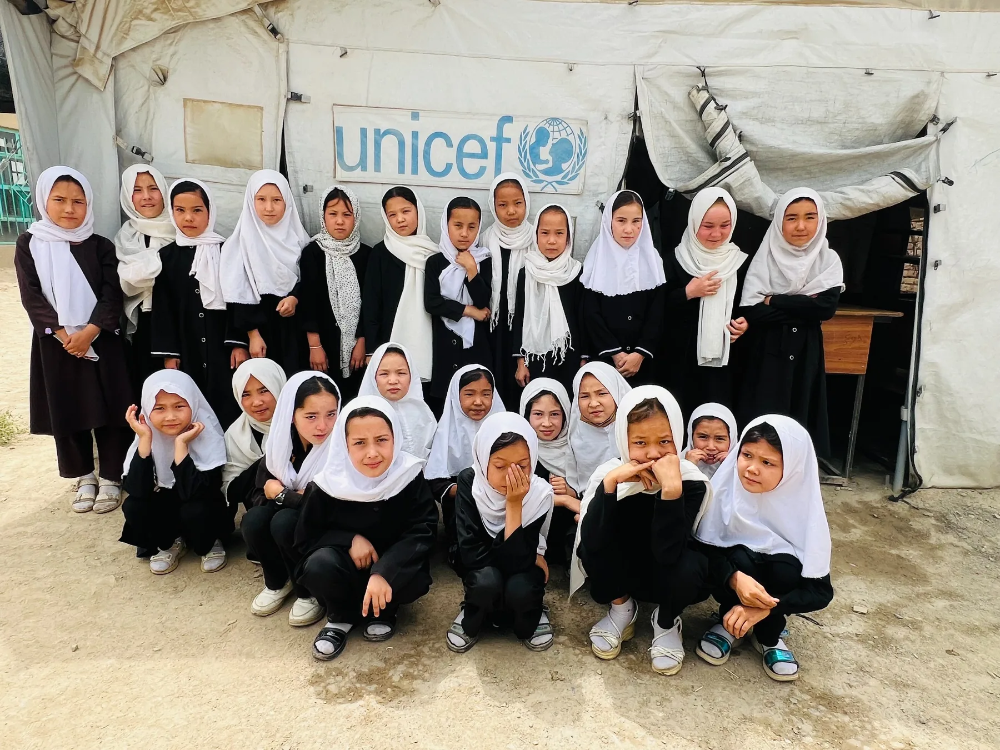
In 2025, Girls for Knowledge organized an educational support program at one of the Orphanage in Afghanistan, reaching approximately 80 students both boys and girls. The initiative aimed to support children’s education by providing essential school supplies and educational books.
The program also included recreational games, group activities, and photography, creating a joyful atmosphere where students could interact, participate, and share memorable moments.
Through this initiative, Girls for Knowledge reaffirmed its commitment to supporting vulnerable children, promoting education, and creating positive experiences for those in need.
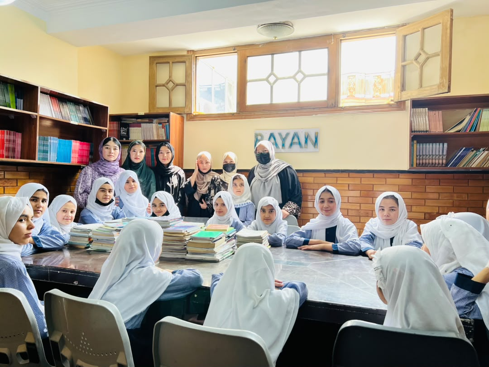
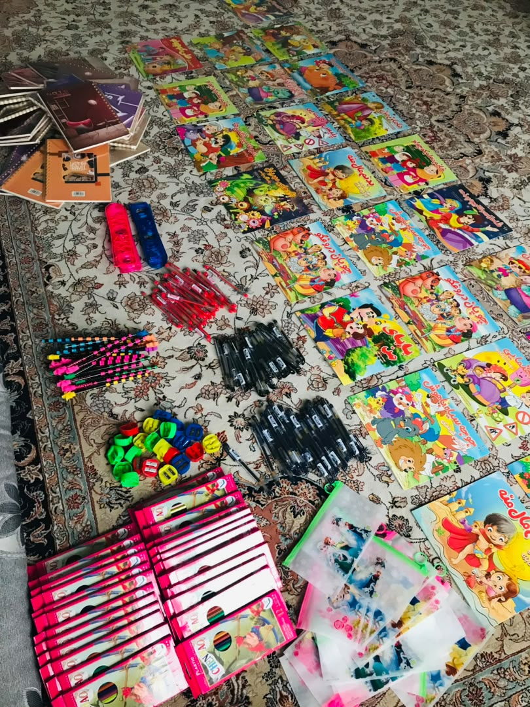
In 2026, Girls for Knowledge returned to Rayan Orphanage in Afghanistan with a meaningful initiative dedicated to education, empowerment, and inspiration, reaching approximately 25 students.
The program included the distribution of essential school supplies and storybooks to support students’ learning, encourage reading, and nurture their curiosity and imagination. Beyond providing educational resources, the initiative created a welcoming space for meaningful conversations, shared experiences, and personal growth.
An important part of the program was an informative discussion about menstruation and menstrual health, helping girls develop greater awareness and understanding of this natural aspect of life. Students also participated in fun games, shared their dreams and aspirations, and enjoyed memorable moments together.
Through conversations about their future goals, the team encouraged students to believe in themselves, remain committed to their education, and work hard to turn their dreams into reality. The event was documented through photographs that captured the joy, connection, and enthusiasm shared throughout the program.
At Girls for Knowledge, we believe that every child deserves more than educational materials—they deserve encouragement, knowledge, opportunities, and the confidence to dream big. This initiative reflected our continued commitment to nurturing young minds and empowering children to pursue a brighter future.
Because every dream deserves a chance, every girl deserves knowledge, and every child deserves a brighter tomorrow.
On March 8, 2026, Girls for Knowledge celebrated International Women’s Day across three Afghan provinces: Kabul, Daikundi, and Bamyan, bringing women together to share knowledge, raise awareness, and recognize the importance of women’s rights and empowerment
Through these gatherings, we created spaces for meaningful conversations, shared experiences, and mutual learning. Our goal was not simply to celebrate a day, but to encourage women to better understand their rights, recognize their value, and feel empowered to shape their own futures.
Kabul: Understanding Women’s Rights Through Knowledge and Dialogue
In Kabul, the celebration was organized in partnership with Miss Madina Masomi, Program Manager of Girls for Knowledge. Guests gathered for an engaging discussion on women’s rights, exploring the subject from both a global perspective and the teachings of Islam.
The conversation highlighted the importance of dignity, justice, respect, and the rights women deserve in every society. By exchanging perspectives and ideas, participants had the opportunity to reflect on the challenges women face and the importance of creating a society in which women are informed, respected, and supported.
Daikundi: Raising Awareness Through Shared Experiences
In Daikundi province, the program was organized in partnership with Miss Hamida Hussaini, Co-founder of Girls for Knowledge. Active women were invited to share their knowledge, experiences, and understanding of women’s rights with women who had limited opportunities to learn about them
The gathering emphasized the importance of making knowledge accessible to every woman, regardless of her circumstances. Through these conversations, participants were encouraged to learn from one another, ask questions, and recognize that understanding their rights is an important step toward greater confidence and empowerment.
At Girls for Knowledge, we believe that awareness becomes more powerful when women share what they know and help others discover what they deserve.
Bamyan: Building Connections and Inspiring Women
In Bamyan province, the celebration was organized in partnership with Miss Zainab Ahmadi, Co-founder of Girls for Knowledge. The gathering continued the spirit of International Women’s Day by bringing women together around the shared values of knowledge, solidarity, and empowerment.
The initiative reflected our belief that every woman deserves the opportunity to learn, express herself, understand her rights, and participate meaningfully in her community. By creating opportunities for connection and awareness, we sought to strengthen the message that women’s voices matter and their potential should never be overlooked.
A Thoughtful Ending: Gifts of Knowledge and Appreciation
To conclude the celebrations, participants received books and flowers prepared by Miss Zalfa Mohammadi, Founder of Girls for Knowledge.
These gifts carried a message beyond their material value. The books represented the power of education and the importance of lifelong learning, while the flowers expressed appreciation, respect, and recognition for the women who participated.
Through this simple but meaningful gesture, we celebrated not only International Women’s Day, but also the strength, dignity, and potential of every woman.
Our Commitment: Beyond One Day
For Girls for Knowledge, International Women’s Day is more than an annual celebration. It is a reminder of the work that remains to be done to ensure that women have access to knowledge, understand their rights, and have the confidence and opportunities to pursue their aspirations.
By organizing these gatherings across Kabul, Daikundi, and Bamyan, we continued our commitment to building awareness, encouraging dialogue, and connecting women through shared knowledge and experiences.
We recognize that meaningful change begins when people are willing to listen, learn, and support one another. Even a single conversation can help someone see her circumstances differently, recognize her rights, or find the courage to take a step toward a better future.
At Girls for Knowledge, we believe that empowering women begins with knowledge, grows through solidarity, and creates lasting change through action.
Every woman deserves to know her worth, understand her rights, and have the opportunity to build the future she dreams of.
Girls for Knowledge — Empowering Women Through Knowledge, Inspiring Change Through Unity.
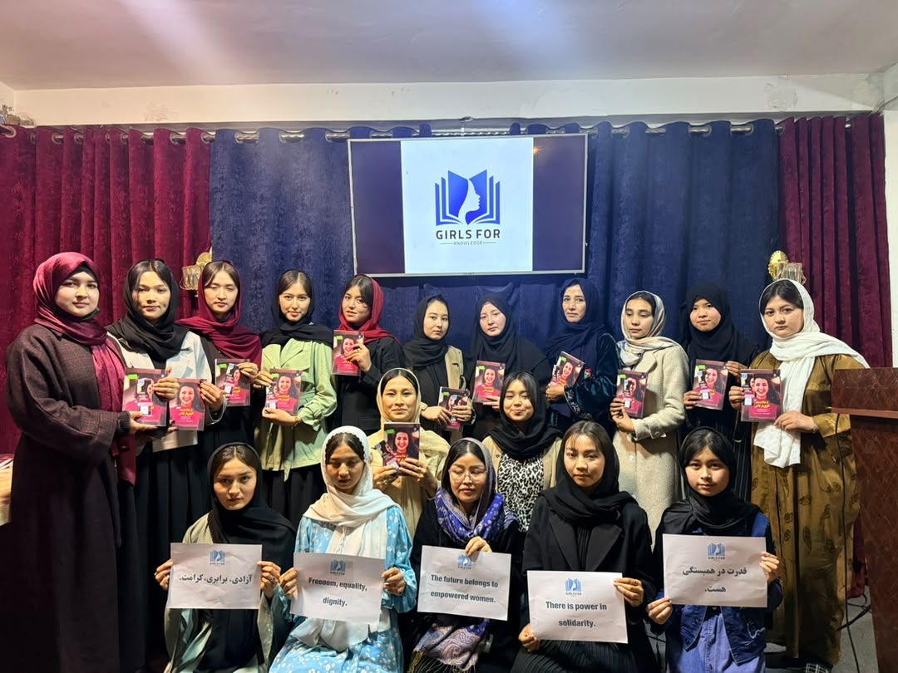
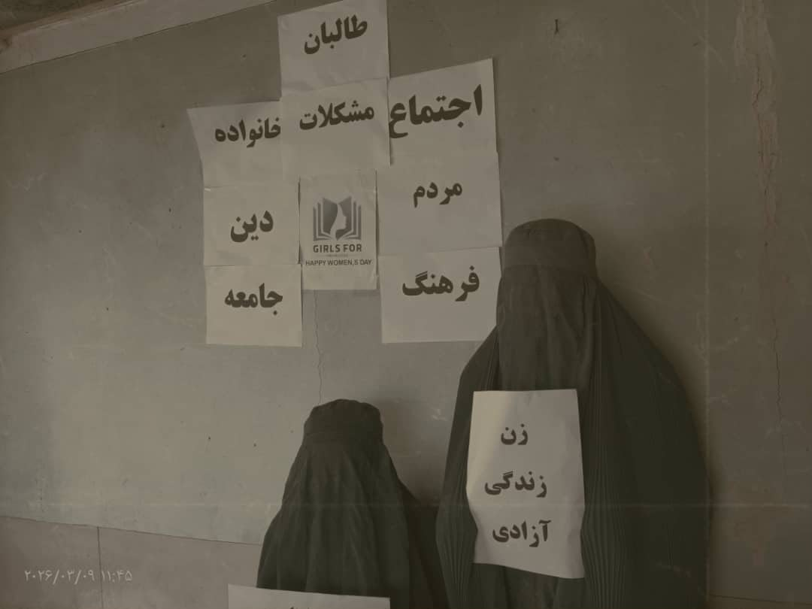
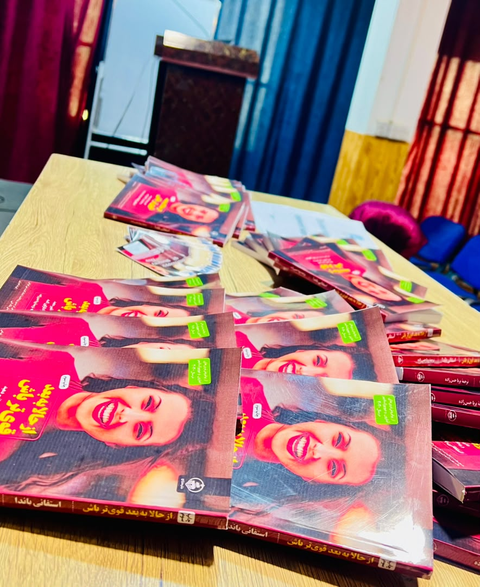
Support Girls for Knowledge, volunteer your time, or contact us to explore ways to work together.